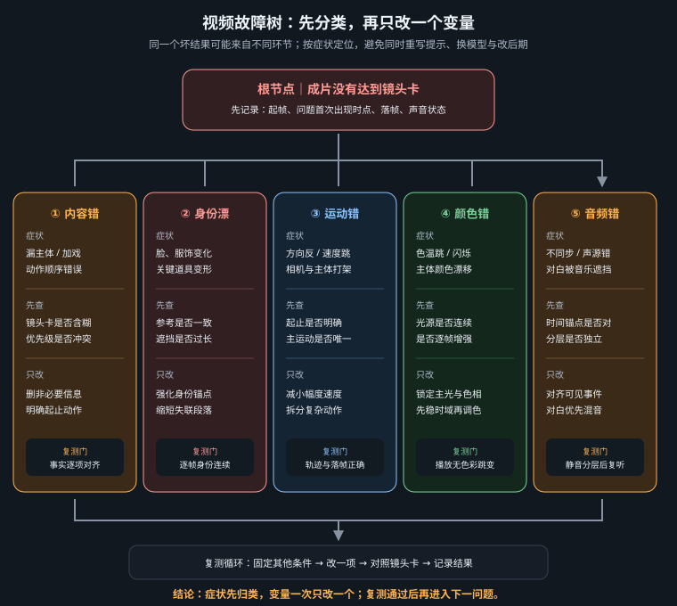

只从官方资料建立来源链，用版本快照把“昨天能跑”变成可复现事实，再用故障树把报错定位到输入、环境、显存、节点、模型或封装

模型文件能下载，不等于能用于当前项目；工作流能打开，也不等于它引用的权重来源可信。每个模型、节点、字体、音乐、声音和参考资产都至少记录：官方页面、具体版本或提交、许可证、下载日期、文件哈希、商业使用边界。模型卡与许可证可能更新，项目启动时保存快照；若条款不清楚，停在法务确认，不用“社区都在用”替代授权。
所谓“一键整合包”可能混入过期节点、来源不明权重、被修改的可执行文件或不兼容许可证。生产环境只使用官方仓库、项目作者公开发布页与经过核验的模型托管页。镜像只能解决传输，不改变来源与许可证；无法核验哈希时，不进入生产。
| 资源 | 官方入口 | 用于核对 |
|---|---|---|
| ComfyUI 文档 | docs.comfy.org | 安装、节点、工作流、API、模型教程与更新说明 |
| ComfyUI 源码与发行记录 | github.com/comfyanonymous/ComfyUI | 提交号、release、依赖与 issue；环境快照的核心版本 |
| ComfyUI-Manager | github.com/ltdrdata/ComfyUI-Manager | 自定义节点管理方式；安装前仍需检查各节点自身许可证 |
| Video Helper Suite | github.com/Kosinkadink/ComfyUI-VideoHelperSuite | 视频读写、音轨连接、编码选项与已知问题 |
| MiniMax H3 | modelscope.cn/models/MiniMax/MiniMax-H3 | 模型卡、权重组成、提示词与许可说明；以页面当前内容为准 |
| LTX-Video | github.com/Lightricks/LTX-Video | 官方代码、模型版本、推理要求与许可证 |
| ComfyUI LTX 教程 | docs.comfy.org/tutorials/video/ltx/ltx-2-3 | 官方工作流与当前参数；页面路径若变更，从文档站内搜索 LTX |
| FLUX.1-dev | huggingface.co/black-forest-labs/FLUX.1-dev | 官方模型卡、访问条件与许可证，不把 dev 的条款类推到其他版本 |
| Qwen-Image | huggingface.co/Qwen/Qwen-Image | 官方权重、模型卡、推荐推理环境和许可证 |
| SeedVR 项目 | github.com/ByteDance-Seed/SeedVR | 官方代码与研究说明；ComfyUI 包装节点的版本需另记 |
| RIFE | github.com/hzwer/ECCV2022-RIFE | 原始项目、模型说明与限制；内置/包装实现仍需记录自身版本 |
| FFmpeg | ffmpeg.org/documentation.html | 编码器、容器、滤镜、媒体探测与命令语义 |
| DaVinci Resolve | blackmagicdesign.com/support | 正式安装包、版本说明和手册；免费版与 Studio 功能边界 |
社区包装节点并不自动成为模型官方实现。归档时同时记录“底层模型官方来源”和“当前使用的包装节点来源”，二者的版本、参数与许可证分别核对。教程、评测和论坛可以帮助理解，但不能替代模型卡、官方 README、release note 与许可证原文。
本章日期为 2026-08-14。它不是“这些永远是最新版”的保证，而是一个维护边界：凡本章涉及的动态工具，都应在项目 manifest 中写实际值，而不是只写“H3”“LTX”“最新版 ComfyUI”。升级当天建立新快照并跑回归片，旧项目继续使用冻结环境，直到新环境通过。
| 层 | 快照字段 | 为什么必须记录 |
|---|---|---|
| 硬件与驱动 | GPU 型号/显存、驱动、操作系统 | 决定可用精度、注意力实现、显存和编码能力 |
| 运行环境 | Python、PyTorch、CUDA/ROCm、xformers/attention 实现、FFmpeg | 同一工作流的速度、数值结果和可用节点会变化 |
| ComfyUI | 版本或 git commit、启动参数、前端版本 | 节点 schema、API 格式和缓存行为可能变化 |
| 自定义节点 | 仓库 URL、commit、依赖锁、安装日期 | “节点名一样”不能证明实现一样 |
| 模型 | 官方 repo/revision、文件名、精度/量化、大小、SHA-256、许可证 | 同名权重可能重传；量化会影响质量与显存 |
| 工作流 | UI JSON、API JSON、关键节点表、工作流 SHA-256 | 让批量脚本与人工界面都能恢复 |
| 输出 | 分辨率、fps、时长、编码、像素格式、色彩、音频采样率 | 防止升级后“出片了”但技术规格悄然变化 |
environment_snapshot.txt（示例字段，不要伪造未知值） Snapshot-Date: 2026-08-14 OS: Windows 11 [exact build] GPU: [model] / [VRAM] Driver: [exact version] Python: [python --version] PyTorch: [python -c "import torch; print(torch.__version__)" ] ComfyUI: [git rev-parse HEAD or installed release] FFmpeg: [ffmpeg -version] Custom-Nodes: [repo URL]@[commit] Models: [official repo]@[revision] / [filename] / SHA256=[hash] Workflow-SHA256: [hash] Known-Good-Test: smoke_1080p_2s / PASS / [date]
Windows 可用 Get-FileHash -Algorithm SHA256 文件名，Linux/macOS 可用 sha256sum 文件名。Python 依赖可另存 pip freeze，但它不能替代 GPU 驱动、节点提交和模型哈希。快照中未知字段写 UNKNOWN 并阻止发布，绝不能凭记忆补值。
一张人物首帧测试身份；一张舰桥首帧测试细线与光源；一段 2 秒动作测试视频与原生音轨；一段 2 秒素材测试超分、插帧、音轨接回与编码。四项在十分钟内发现大多数环境级故障，比把完整 60 秒项目当测试便宜得多。
任务失败或结果异常 ├─ A. 程序无法启动 │ ├─ Python/依赖导入错误 → 对照官方 requirements 与环境快照；恢复已知可用依赖 │ ├─ CUDA/驱动不可用 → 检查驱动、PyTorch 后端与 GPU 可见性 │ └─ 自定义节点启动报错 → 禁用最近变更节点；按 commit 回滚；不要盲目重装全环境 ├─ B. 工作流打不开或节点缺失 │ ├─ 节点未安装 → 从工作流记录定位官方/作者仓库，核对许可证后安装固定 commit │ ├─ 节点已改名/接口变化 → 查 release note，手动迁移输入，不用同名陌生节点代替 │ └─ 模型列表为空 → 检查目录、文件完整性、权限与重启/刷新 ├─ C. 执行中断 │ ├─ OOM → 先降分辨率/时长/batch，再启用 VAE tiling、分块、卸载或较低精度 │ ├─ shape/frame 错误 → 按当前模型官方规则核对帧数、尺寸、音频采样率 │ ├─ 下载看似卡死 → 查看控制台、磁盘与网络；优先手动核对官方文件和哈希 │ └─ API 400/节点字段错误 → 重新 Export(API)，比较 schema 与白名单节点 ID ├─ D. 能出片但内容错误 │ ├─ 与提示词无关 → 查文本是否进入正确编码器、工作流是否误接、提示词语言与模板 │ ├─ 人物换脸 → 锚句→中性多角度参考→内容 LoRA；先查参考输入是否真正生效 │ ├─ 几何/动作崩 → 回首帧与视频提示，一镜一动作；超分不能修结构 │ └─ 色彩漂 → 锁底座、光源方向与色彩脚本；最后才用调色统一 ├─ E. 画质或时间异常 │ ├─ 超分闪烁 → 停用逐帧路线；改时序模型、降低强度、逐镜处理 │ ├─ 分块接缝 → 增加 tile overlap 或调整分块；检查 VAE tiling │ ├─ 插帧双影 → 遮挡过大/转场被插帧；逐镜处理或保留原帧率 │ └─ 视频变慢 → 输出 fps 未乘插帧倍率；核对总时长 └─ F. 音频与封装异常 ├─ 无声 → audio 输出未接回、未启用 Add Audio、容器/编码不支持 ├─ 先准后漂 → 视频变速、采样率或时间戳错误；统一 48 kHz 并核对首中尾 ├─ 爆音/削波 → 增益叠加或限制器错误；查 True Peak 与总线链 └─ 播放器不兼容 → 用 ffprobe 核对容器、编码、像素格式和音频格式
| 症状 | 先检查 | 不要先做 | 通过标准 |
|---|---|---|---|
| 首次运行长时间无输出 | 控制台是否下载权重、磁盘是否增长、网络是否活动 | 连续重启制造半文件 | 官方文件完整且哈希匹配，冒烟片成功 |
| 升级后同工作流变色 | 模型/精度/VAE/色彩节点/前后端版本 | 直接重做全部提示词 | 固定测试帧在批准容差内 |
| 只有批量 API 失败 | API JSON 是否重新导出、节点 ID 与字段、路径转义、响应正文 | 把请求无限重试 | 单任务提交成功且保存 prompt_id |
| 显存还有但仍 OOM | 峰值、碎片、并发任务、文本编码器驻留与分块阶段 | 只看空闲桌面显存 | 完整镜头峰值低于可用上限并有余量 |
| 输出文件存在但打不开 | 任务是否中断、文件大小、ffprobe、磁盘空间、容器收尾 | 仅改扩展名 | 可完整解码至末帧且音轨存在 |
| 生成可用但无法商用 | 模型、LoRA、参考图、声音、音乐、字体的许可证与授权 | 从不明来源再找一份同名文件 | 每项来源与许可在 manifest 可追溯 |
目标：要生成/处理什么，期望规格是什么 现象：完整错误文本；从哪一步开始；是否稳定复现 最小复现：精简工作流 + 2 秒素材或单张测试图 环境：OS / GPU / 驱动 / Python / PyTorch / ComfyUI commit 节点：相关 custom node repo + commit 模型：官方来源 + 文件名 + 精度/量化 + SHA-256 输入：尺寸 / 帧数 / fps / 音频采样率 / 色彩空间 已尝试：每次只列一个改动及结果 附件：控制台日志、工作流 JSON、媒体信息；删除隐私与密钥
不要只发截图中的最后一行，也不要把日志里的用户名、访问令牌、私有 URL、客户素材路径直接公开。先用最小复现验证问题是否仍存在；若精简后消失，逐个恢复节点就能定位冲突。一个清楚的问题报告既帮助自己排错，也尊重维护者的时间。
□ 所有模型和节点来自可核验官方/作者页面；□ 无整合包、破解软件或盗版资产；□ 许可证与商业边界已审；□ 版本、提交、精度、哈希和日期完整；□ 旧环境可回滚；□ 冒烟测试与回归测试通过；□ 工作流 UI/API 两份均归档；□ 输出分辨率、fps、时长、色彩和音频符合需求；□ 故障修复记录了根因而非只记录“重装后好了”；□ 日志、工程和报告不含密钥与隐私。
工具会更新，权重会替换，节点会改名。真正长久的是三条纪律：从官方来源建立证据链；用版本与哈希冻结可用环境；按层级和最小复现排错。当每个结果都能回答“由什么生成、在什么环境生成、依据什么许可使用、失败时回到哪一层修”，这套生产系统才算真正完成。